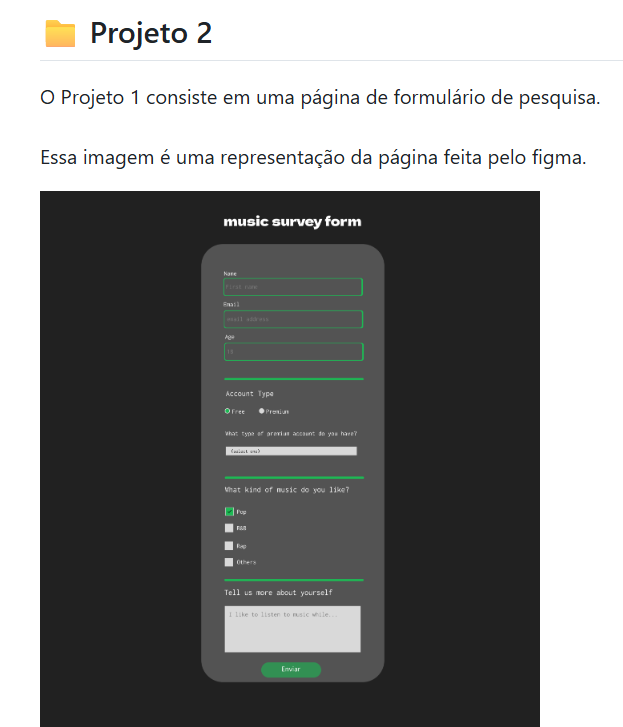

Olá, me chamo Lívia
Desenvolvedora Fullstak
Desenvolvo aplicações back e front-end

Olá, me chamo Lívia
Desenvolvo aplicações back e front-end
Sou estudante do 4º semestre de Ciência da Computação na Universidade Estadual da Paraíba -UEPB- e tenho interesse em desenvolvimento de software. Busco constantemente aprimorar minhas habilidades por meio de projetos práticos, atuando tanto no front-end quanto no back-end. Acredito no aprendizado contínuo e estou sempre em busca de novos desafios que me permitam evoluir como desenvolvedora
Atualmentre apenas com projetos pessoais e acadêmicos.
Graduanda em Ciência da Computação pela UEPB .
War of Kings é um jogo de xadrez local desenvolvido em Java com JavaFX, que traz a emoção das partidas clássicas com visual moderno, regras oficiais completas e destaque dinâmico das jogadas.
Desenvolvimento de designs responsivos para a web, utilizando HTML e CSS

Aplicação voltada a análise de Algoritmos de Busca e Ordenação
HTML5
CSS3
JavaScript
Java
Python
C